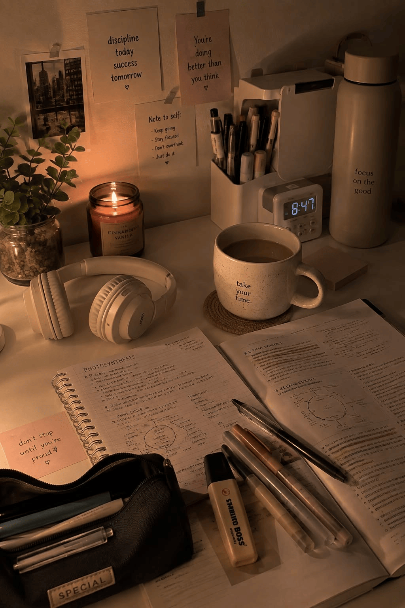
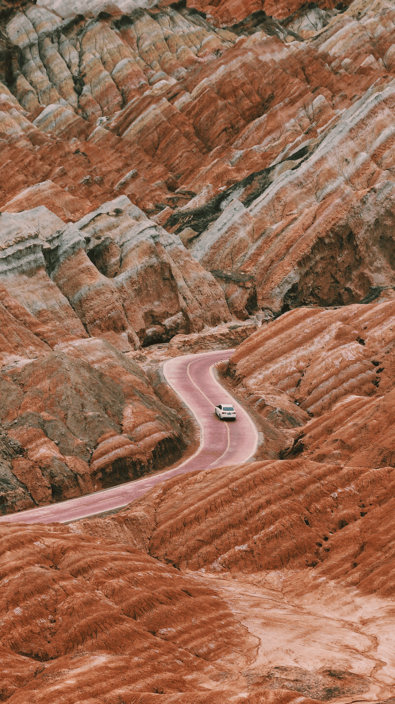

Moods & Activities Playlists

Hiking
Woodsy folk and campfire-ready songs for the trail. These tracks have room to breathe, with plenty of acoustic guitar and big, open choruses to keep your steps in rhythm.
Highlights
- Meet Me in the Woods - Lord Huron
- Northern Attitude - Noah Kahan
- Fire Fly - Childish Gambino
See the playlist
Reading
Quiet, gentle songs that stay in the background. Mostly soft acoustic indie folk with unhurried tempos, so the music sets the mood without pulling your attention off the page.
Highlights
- february - Hazlett
- blue jean - Hazlett
- doing my best - Hazlett
See the playlist

Homework
Mellow, steady songs for long study sessions. Nothing too jarring or high-energy, just smooth grooves that keep you focused and make a late night at the desk feel a little cozier.
Highlights
- Pillow - Malcolm Todd
- Everywhere, Everything - Noah Kahan
- Colors - Goldford
See the playlist

Road Trips
Windows-down, sing-along songs for the long drive. A mix of catchy indie pop, big-hearted folk, and hip-hop that keeps the energy up from the first mile to the last.
Highlights
- Art House - Malcolm Todd
- Stick Season - Noah Kahan
- Bonfire - Childish Gambino
See the playlist